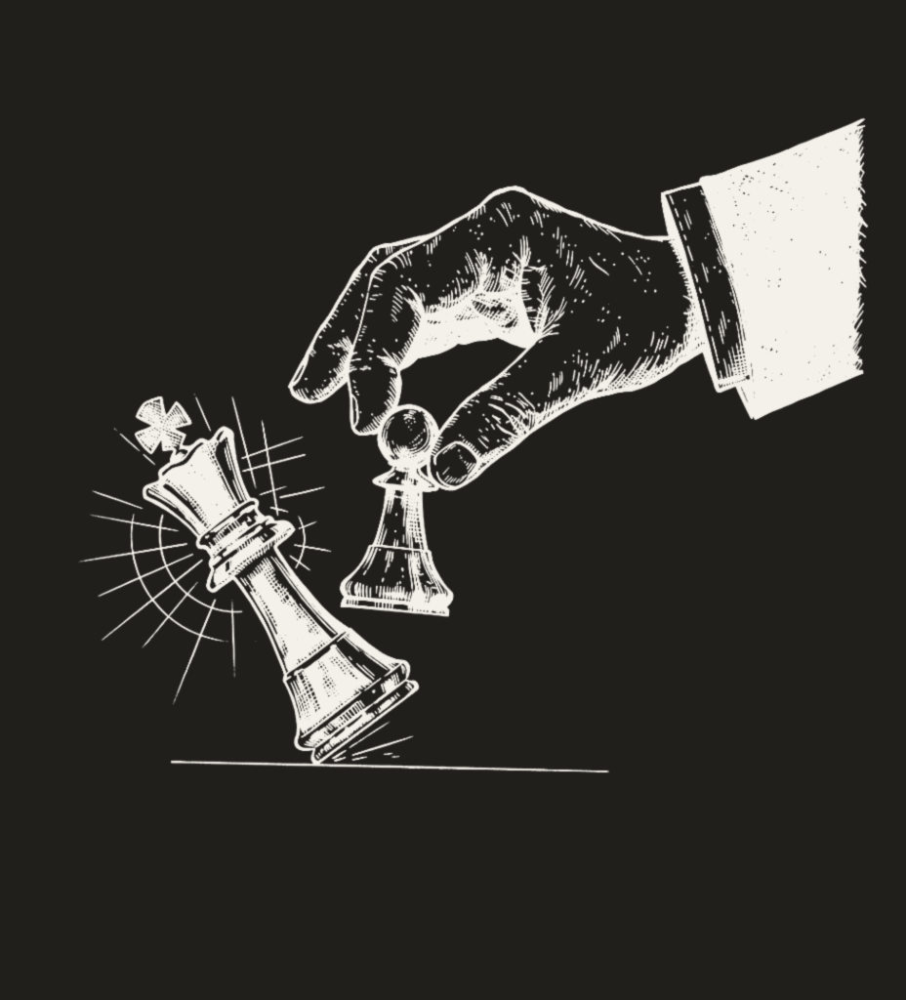

Grundaren
Rickson Mansiamina
Riktningsvägledare och grundare av Difference Consulting.
Jag arbetar med individer genom prestation, press, förändring och vardag. Arbetet riktas mot det som går att påverka, träna och bygga över tid – så att riktningen inte stannar i förståelse, utan blir synlig i beteendet. Det jag idag arbetar med tillsammans med andra har jag först behövt möta i mig själv.
LED DIG SJÄLV. FÖRST.

Bakgrunden
Flera nivåer. Samma spel.
Min bakgrund finns i fotbollen och i prestationsmiljöer på flera nivåer. Från Hammarbys ungdomsverksamhet och en allsvensk A-lagsmiljö i AIK till erfarenheter från Superettan, Division 1 och fotboll i Finland. Olika nivåer. Olika roller. Olika förutsättningar.
Jag har befunnit mig nära nästa steg och längre ifrån det. Varit i miljöer där platsen, prestationen och nästa steg aldrig varit givna.
Fotbollen lärde mig att prestera. Den lärde mig också vad som händer mellan prestationerna. Efter misstaget. När du inte spelar. När konkurrensen förändras. När beskedet kommer. När rollen förändras. När nästa situation börjar innan den förra har lämnat dig.
Med tiden blev frågan större än fotbollen: Vem leder människan när prestationen inte längre ger henne svaret?

Vändpunkten
När prestationen fick bära för mycket av vem jag var.
Under lång tid var fotbollen inte bara något jag gjorde. Den hade blivit en stor del av hur jag förstod vem jag var. När rollen förändrades blev något annat synligt.
Jag hade tränat på att prestera. Jag hade inte tränat på att leda mig själv genom det som hände när prestationen inte längre bar mig.
Där började ombyggnaden. Inte med ett företag. Inte med ett system. Med mig själv.

Ombyggnaden
Vad är sant här?
Vad bär jag med mig från det som varit?
Vad kan jag påverka nu?
Vad händer med mitt beteende när känslan förändras?
Vilken riktning väljer jag när resultatet inte ger mig svaret?
Vad är nästa rätta steg?
Det kom inget stort svar. Det kom ett arbete. Situation för situation. Val för val. Kvitto för kvitto.
BRICKBYBORINGBRICK.STEPBYBORINGSTEP.
Arbetet
Ombyggnaden fick en form.
Ur den processen växte Difference Consulting fram. Med tiden växte också rollen riktningsvägledare fram – som ett sätt att beskriva arbetet.
Min kompetensgrund omfattar utbildning inom KBT, psykologiskt kapital och mental coaching. Den egna erfarenheten gav mig en förståelse för prestationsmiljön inifrån. Utbildningen gav fler perspektiv på tanke, beteende och psykologiska resurser. Ingen av dem gör någon annans verklighet till min.
Idag möter arbetet individer från olika sammanhang – från elitfotboll och ledarskap till entreprenörskap och individuella processer utanför idrotten. Rollerna skiljer sig. Miljöerna skiljer sig. Det som blir synligt skiljer sig.
Individen är utgångspunkten.
Riktningsvägledning börjar i det som blir synligt hos individen och riktas mot det som går att påverka, träna och bygga över tid. Vägledningen ska inte skapa beroende. Den ska bygga självständighet.
Arbetet blev ett system.
Ur den egna processen, utbildningen och arbetet med individer har Differencismen vuxit fram.

Ett system för självledarskap i prestation.
Utforska Differencismen →Idag
Arbetet fortsätter.
Jag använder inte ett system med andra som jag själv står utanför.
Samma principer behöver möta min egen verklighet.

Se vad som är sant.
Behåll perspektivet.
Välj riktning.
Gör den synlig.
Ta kvittot.
Bygg vidare.
Det finns alltid en nästa situation.

The Difference Playbook
En väg in i tänkandet.
The Difference Playbook samlar delar av språket, perspektiven och principerna bakom arbetet. Den är inte hela Differencismen. Den är en väg in.
Fråga om Playbooken →Nästa steg behöver inte vara stort. Det behöver vara rätt.
Ett första samtal börjar där du befinner dig.